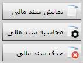

تمام اسناد صادر شده از خزانه در این قسمت بایگانی می شود، با کلیک روی منوی «بایگانی و مدیریت اسناد خزانه» پنجره مربوط به آن باز شده و به صورت شکل زیر نمایش داده می شود:

صفحه «بایگانی و مدیریت اسناد خزانه» که در شکل بالا مشاهده می کنید به سه بخش تقسیم شده است که در ادامه هر یک را توضیح می دهیم:
1. در نوار افقی بالای صفحه که با کادر شماره 1 مشخص شده است فیلتر هایی قرار داده شده که با استفاده از آن ها می توانید اسناد موجود در صفحه را فیلتر کنید. برای مثال با انتخاب دوره مالی می توانید اسناد مربوط به دوره مالی انتخاب شده یا با تعیین یک بازه تاریخی اسناد مرتبط با آن بازه تاریخی را مشاهده نمایید. همان طور که ذکر شد شما به صورت پیش فرض تمام اسناد را مشاهده می کنید اما می توانید با فلیتر های عملیات (بر اساس عنوان عملیات)، وضعیت تایید، وضعیت ارسال، وضعیت سند(بر اساس وضعیت سند حسابداری)، صندوق، حساب بانکی، شخص و ... اسناد را مطابق نیازتان فیلتر کنید.
2. کادر شماره 2 اسناد بایگانی شده خزانه را طبق فیلتر بندی که شما روی اسناد انجام داده اید نشان می دهد. بسیاری از مشخصات سند خزانه از جمله شماره و کد بایگانی سند، نام عملیات، نام شخص، تاریخ، نام ثبت کننده سند و ...در جدول نمایش داده می شود. فیلد های موجود در جدول را می توانید با استفاده از ابزار قرار داده شده در بالای جدول تغییر دهید، از سایر ابزار نیز مطابق با آنچه در جدول های قبل گفته شد می توانید استفاده نمایید.
3. اینک به بررسی نوار ابزار عمودی سمت چپ صفحه «بایگانی و مدیریت اسناد خزانه» که با کادر شماره 3 مشخص شده است می پردازیم:
 این گزینه سند انتخاب شده را در فرم صدور سند خزانه نمایش می دهد و شما می توانید در صورتی که آن سند تایید شده نباشد آن را ویرایش یا حذف کنید. همچنین می توانید از سند باز شده گزارش بگیرید و یا سند قبل و بعد آن را مشاهده کنید.
این گزینه سند انتخاب شده را در فرم صدور سند خزانه نمایش می دهد و شما می توانید در صورتی که آن سند تایید شده نباشد آن را ویرایش یا حذف کنید. همچنین می توانید از سند باز شده گزارش بگیرید و یا سند قبل و بعد آن را مشاهده کنید.
 اگر یک سند خزانه را انتخاب کنید و بر روی گزینه تاریخچه عملیات کلیک کنید پنجره ای ظاهر می شود که در آن تمام عملیاتی که روی سند خزانه انجام شده است همراه تاریخ و ساعت انجام عملیات و همچنین نام کاربر انجام دهنده آن نمایش داده می شود.
اگر یک سند خزانه را انتخاب کنید و بر روی گزینه تاریخچه عملیات کلیک کنید پنجره ای ظاهر می شود که در آن تمام عملیاتی که روی سند خزانه انجام شده است همراه تاریخ و ساعت انجام عملیات و همچنین نام کاربر انجام دهنده آن نمایش داده می شود.
 این گزینه این امکان را به شما می دهد تا شماره اسناد را به ترتیب تاریخ و بر حسب عملیات خزانه مرتب کنید. بعد از کلیک بر روی این آیکن پنجره ای ظاهر می شود که محدوده تاریخی را که می خواهید مرتب کنید از شما سوال می کند. (اسناد در محدوده تاریخی نباید در حالت تایید شده باشند.) همان طور که در شکل بعد مشاهده می کنید بازه زمانی پیش فرض در این پنجره دوره مالی پیش فرض نرم افزار می باشد و شما می توانید آن را به بازه زمانی دلخواه تغییر دهید.
این گزینه این امکان را به شما می دهد تا شماره اسناد را به ترتیب تاریخ و بر حسب عملیات خزانه مرتب کنید. بعد از کلیک بر روی این آیکن پنجره ای ظاهر می شود که محدوده تاریخی را که می خواهید مرتب کنید از شما سوال می کند. (اسناد در محدوده تاریخی نباید در حالت تایید شده باشند.) همان طور که در شکل بعد مشاهده می کنید بازه زمانی پیش فرض در این پنجره دوره مالی پیش فرض نرم افزار می باشد و شما می توانید آن را به بازه زمانی دلخواه تغییر دهید.

پس از تایید، شماره اسناد محدوده زمانی مورد نظر بر حسب نوع عملیات و تاریخ مرتب می شوند.
 شما می توانید با گزینه «ثبت تایید» سند های خزانه صادر شده را تایید کنید، ضمن اینکه سندی که تایید می شود قابلیت حذف یا ویرایش را ندارد، برای ویرایش یا حذف سند تایید شده باید آن را توسط گزینه «برگشت از تایید» از حالت تایید خارج کنید تا بتوانید عملیات مذکور را روی سند انجام دهید.
شما می توانید با گزینه «ثبت تایید» سند های خزانه صادر شده را تایید کنید، ضمن اینکه سندی که تایید می شود قابلیت حذف یا ویرایش را ندارد، برای ویرایش یا حذف سند تایید شده باید آن را توسط گزینه «برگشت از تایید» از حالت تایید خارج کنید تا بتوانید عملیات مذکور را روی سند انجام دهید.
در سیستم سایان، صدور سند حسابداری برای اسناد خزانه دو حالت دارد:
اگر در تنظیمات سیستم حسابداری اجازه صدور سند حسابداری از سیستم خزانه داری داده شده باشد ( که در نرم افزار سایان تنظیمات پیش فرض به همین شکل است.)در این صورت در صفحه «بایگانی و مدیریت اسناد خزانه» گزینه های مربوط به محاسبه، نمایش و حذف سند مالی نمایش داده می شود.
 در صورتی که تنظیمات پیش فرض برای صدور سند مالی از سیستم خزانه تغییر داده نشود، و همچنین از صفحه تنظیمات خزانه داری گزینه صدور اتوماتیک سند حسابداری برای اسناد خزانه انتخاب شده باشد، پس از ثبت سند خزانه، سند حسابداری آن طبق الگوهای تعریف شده در «الگوی صدور اسناد» صادر شده و به صورت اتوماتیک ثبت و بسته می شود. برای اطمینان از نحوه صدور سند حسابداری مربوطه، می توانید همزمان با انتخاب گزینه ثبت سند خزانه کلید Shift را نگه دارید تا بتوانید سند حسابداری را هنگام صدور مشاهده کرده و در صورت صحت آن، خود آن را تایید کنید. همچنین پس از صدور سند مالی می توانید آن را با استفاده از گزینه «نمایش سند مالی» مشاهده و در صورت نیاز ویرایش نمایید. توسط گزینه های «حذف سند مالی» و «محاسبه سند مالی» می توانید سند مالی اسناد خزانه مورد نظرتان را حذف و دوباره از نو صادر کنید.
لازم به ذکر است که می توانید اسناد حسابداری را به صورت گروهی صادر کنید و یا آن ها را به صورت گروهی حذف نمایید.
 توجه داشته باشید حذف سند حسابداری تنها در صورتی امکان دارد که سند حسابداری مذکور در سیستم حسابداری تایید نشده باشد.
توجه داشته باشید حذف سند حسابداری تنها در صورتی امکان دارد که سند حسابداری مذکور در سیستم حسابداری تایید نشده باشد.
 اگر در صفحه تنظیمات حسابداری اجازه صدور سند مالی از سیستم خزانه داری داده نشده باشد در این حالت به جای گزینه های مربوط به محاسبه، نمایش و حذف سند مالی دو گزینه «ارسال به مالی» و «برگشت از ارسال» در صفحه «بایگانی و مدیریت اسناد خزانه» ظاهر می شود. اسناد خزانه بعد از تایید در سیستم خزانه با استفاده از گزینه«ارسال به مالی» به بخش مالی فرستاده می شوند و تا زمانی که مسئول مالی در سیستم حسابداری آن سند را تایید نکرده باشد خزانه دار با استفاده از گزینه«برگشت از ارسال» می تواند آن را از حالت ارسال شده خارج کند.
اگر در صفحه تنظیمات حسابداری اجازه صدور سند مالی از سیستم خزانه داری داده نشده باشد در این حالت به جای گزینه های مربوط به محاسبه، نمایش و حذف سند مالی دو گزینه «ارسال به مالی» و «برگشت از ارسال» در صفحه «بایگانی و مدیریت اسناد خزانه» ظاهر می شود. اسناد خزانه بعد از تایید در سیستم خزانه با استفاده از گزینه«ارسال به مالی» به بخش مالی فرستاده می شوند و تا زمانی که مسئول مالی در سیستم حسابداری آن سند را تایید نکرده باشد خزانه دار با استفاده از گزینه«برگشت از ارسال» می تواند آن را از حالت ارسال شده خارج کند.